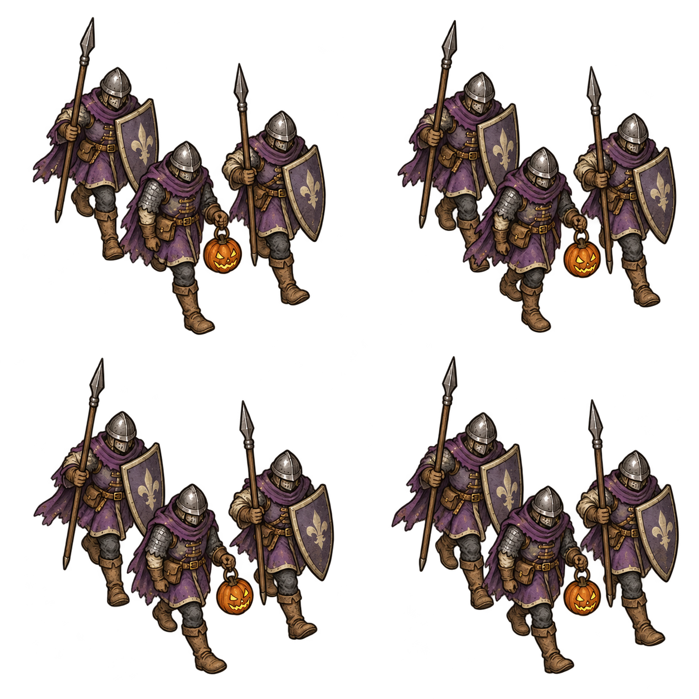

CROWNLANDS · HALLOWEEN COLLECTION
Halloween March
Traveling troops
Three soldiers. One pumpkin lantern.
 Thornford
Thornford Wyvernhollow
Wyvernhollow
Map readability
The artwork sits above the count and mission badge. Scouts retain their separate marker.
64 px · Distant view
88 px · Proposed map size